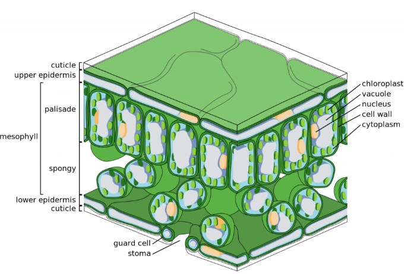
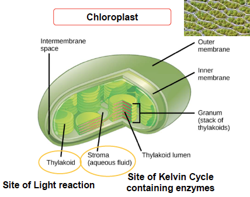
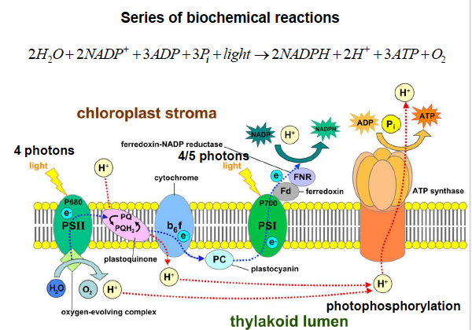

Theoretical CUE
Understanding GPP and Ra on leaf-level Leaf Structure: https://www.youtube.com/watch?v=pwymX2LxnQs
Chloroplasts are organelles that conduct photosynthesis, where the photosynthetic pigment chlorophyll captures the energy from sunlight, converts it, and stores it in the energy-storage molecules ATP and NADPH while freeing oxygen from water in plant and algal cells.

In photosynthesis-light reaction stage, light-dependent reactions convert light energy (absorbed by chlorophyll) into chemical energy (NADPH and ATP) required for the Calvin Cycle.
Step 1: Light absorption by chlorophyll; In Photosystem II, chlorophyll absorbs about 4 photons, exciting electrons to a higher energy state. These electrons are transferred into an electron transport chain.
Step 2: Water splitting; The oxygen-evolving complex splits 2 water molecules into 4 electrons, 4 protons, and one oxygen molecules. The 4 electrons replace those lost from Photosystem II, the protons accumulate in the thylakoid lumen, and oxygen is released as a byproduct.
Step 3: Electron transport chain; 4 electrons move through plastoquinone, cytochrome b6f, and plastocyanin. This transfer drives proton pumping into the lumen, further increasing the proton gradient.
Step 4: Photosystem I and NADPH formation; Electrons reach Photosystem I at a lower energy level and are re-excited by light. They are passed to ferredoxin and then to NADP+ reductase, reducing 2 NADP+ to 2 NADPH.
Step 5: ATP synthesis; The accumulation of protons in the lumen from water splitting and proton pumping drives their return through ATP synthase, producing about three molecules of ATP from ADP and inorganic phosphate.

In photosynthesis - calvin cycle stage, carbon fixation happened, which NADPH and ATP are used to convert CO2 into carbohydrates. There are three phases included: caboxylation, reduction and regeneration.
Carboxylation (carbon fixation): the 5-carbon sugar molecule RuBP from carbohydrates pools combine with CO2 to form two 3C molecules, under the catalyzation of the enzyme Rubisco.
Reduction: the 3C molecules are reduced using ATP and NADPH and then transformed into 3C carbohydrates, a monosaccharide, which is small part exported and then transformed into more complex C compunds
Regeneration: the large part of 3C compounds not exported is reused and combined using additional ATP to regenrate the 5C-RuBP.
(Photorespiration happened in the process, which reduce 30-50% net CO2 uptake. Rubisco favors oxygenase, part of them with the energy to produce CO2 instaed of O2)
Refer to the light energy:
Incoming solar radiation -> about 43.8% are in PAR wavelengths can be used for photosynthesis
Gibbs free energy to conert a umol CO2 to glucose is 0.47 J, photo energy to assimilate a umol CO2 is 1.75 J -> 27% photosynthetic efficiency for absorbed PAR -> the maximum quantum efficiency is 0.125
But actually: 0.081 for C3 plants and 0.040 for C4 plants
Only 50% GPP converted to biomass growth -> 1-2% of total solar radiation to biomass build!
https://bio.libretexts.org/Learning_Objects/Worksheets/Biology_Tutorials/Cellular_Respiration
Autotrophic respiration includes leaf (light+dark), stem and root respiration.
- Glycolysis
- Krebs (TCA) cycle
- Electron Transport chain (ETC)
What is CUE?
CUE = NPP / GPP = (GPP - R) / GPP, Ra = Rg (growth respiration) + Rm (maintenance respiration), NPP = Δ (standing biomass) + losses
Required 2nd review: https://onlinelibrary.wiley.com/doi/10.1111/j.1365-2486.2007.01365.x
Lowest value of CUE (0.22) was for 115 year-old stand of Picea mariana, the highest value was for a 5-year-old stand of Populus nigra exposed to elevated atmospheric CO2
Boreal forest - CUE 0.32 -> high rates of C loss during dormant season? can be examined by GPP/foliage ratio
Tropical forests - CUE 0.46
Temperate deciduous forests - CUE 0.59
Autotrophic respiration (Ra) = sum of all mitochondrial respiration by autotrophs.
Methods on Measuring CUE
Global Ecosystem Monitoring (GEM)
GEM network is a network of sites where the productivity and carbon cycling of terrestrial ecosystems is tracked through a standard protocol, and frequently integrated with data on plant functional traits and broader environmental variables, such as tree species community composition, soil and climate.
\[ \text{NPP} = \text{NPP}_{\text{Above Ground Wood (ACW)}} + \text{NPP}_{\text{litter fall}} + \text{NPP}_{\text{fine roots}} + \text{NPP}_{\text{coarse root}} + \text{NPP}_{\text{understory}} + \text{Herb dung} \]
NPPACW include NPP from wood production and branch turnover. For wood production, we can calculate from forest censuses on annual scale or using the dendrometer bands at a seasonal scale. Then growth rates can be converted into woody biomass by (Chave et al., 2014): \(\ln(\text{AGB}) = \alpha + \beta \ln(\rho \times D^2 \times H) + \varepsilon\) (D is trunk diameter, H is tree height); Fallen branch is compensated by new branch growth, calculate by volume (lengthdiameter)wood density then converted to dry biomass.
NPPlitterfall is the sum of leaf litterfall (outflow) and changes in canopy leaf biomass (inflow). Litterfall is separated into leaves, twigs, and reproductive parts, dried to biomass, and converted to C (using ~50% of dry mass). At some sites, leaf herbivory is quantified by scanning fallen leaves. Seasonal canopy productivity is derived from canopy leaf area index (LAI, from hemispherical photos) combined with specific leaf area (SLA, leaf area per unit mass) to estimate canopy leaf biomass.
NPPfine roots is a frequently neglected component of NPP measurements due to the challenge two measure.Two methods are accepted here: 1) installations of root-free ingrowth cores and samples after 3 months (Ingrowth cores → harvest new root dry mass → convert to carbon (~50% of dry mass) → scale by incubation time and ground area → annual NPP) or 2) trace root growth manually at set intervals through rhizotron (a transparent observation panel installed in the soil).
NPPcoarse roots is not directly measured but estimated by multiplying aboveground woody productivity with biome-specific allometric relationships.
NPPunderstory is estimated from seasonal quadrat harvests of aboveground herbaceous biomass, dried and converted to C (~50% of dry mass). Productivity is calculated as the sum of positive biomass increments between harvests over the year, excluding declines due to turnover.
Herb dung = herbivore fecal biomass, included as an NPP component to capture carbon fluxes from herbivory.
\[ R_{a} = R_{\text{canopy}} + R_{\text{stems}} + R_{\text{rhizosphere}} \]
Rstems (woody respiration) is measured using a closed dynamic chamber (SRC-1) connected to an IRGA (EGM-4) on permanent collars sealed to tree boles at 1.3 m height, typically across ~25 trees per plot.
Rcanopy (leaf respiration) is measured as leaf dark respiration with an IRGA and cuvette on ~20 trees per plot, using both sunlit and shaded branches. Branches are re-cut underwater to restore conductivity and leaves are dark-adapted in black bags before measurement.
Rrhizosphere is derived from total soil CO2 efflux measured with an IRGA (EGM-4) and SRC-1 on permanent soil collars. Partitioning experiments use shallow collars (10 cm) for total respiration and deep collars (40 cm) excluding roots and mycorrhizae, with controls for disturbance effects.